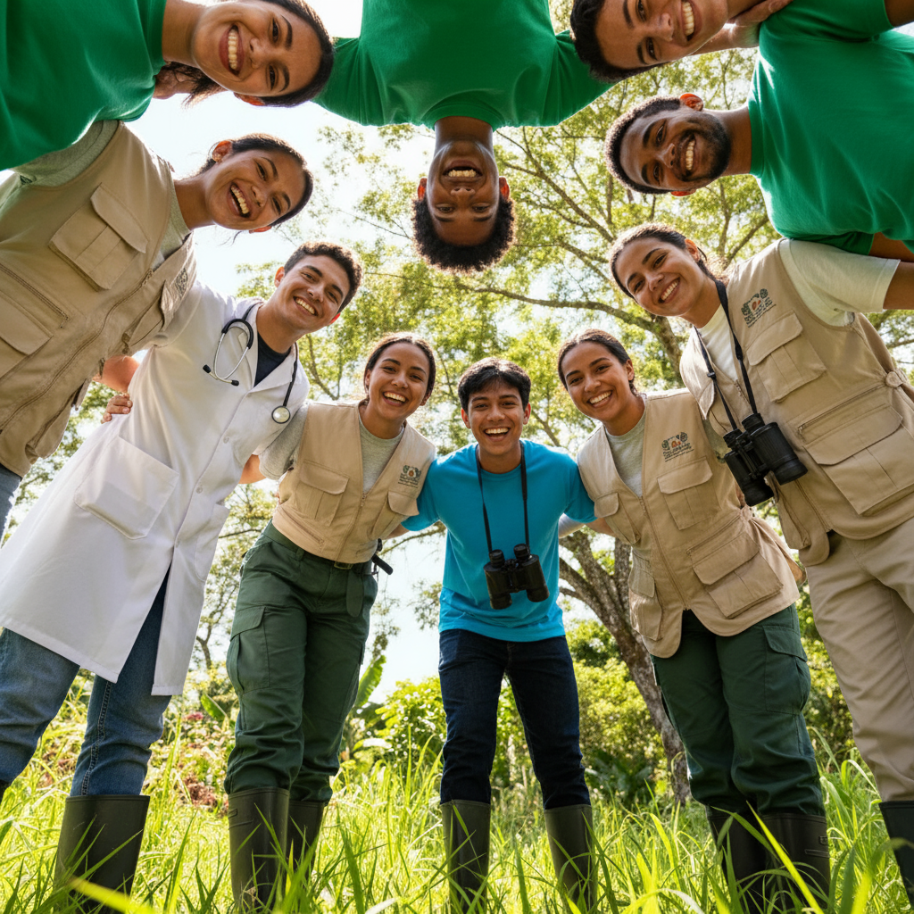

Transforme Vidas com Seu Tempo e Talento
Ser voluntário dos Defensores do Rio é muito mais do que doar tempo — é compartilhar experiências, aprender com a sabedoria ribeirinha e construir pontes entre mundos. Cada voluntário é essencial para amplificar nosso impacto.

Áreas de Atuação Voluntária
Educação
Professores, pedagogos, estudantes e amantes da educação podem atuar em oficinas de leitura, reforço escolar, capacitação de professores locais e criação de materiais didáticos.
Saúde
Médicos, enfermeiros, dentistas, psicólogos e estudantes da área da saúde participam de expedições médicas, campanhas de vacinação e capacitação de agentes comunitários.
Comunicação e Marketing
Designers, fotógrafos, videomakers, redatores e especialistas em mídias sociais ajudam a contar as histórias das comunidades e divulgar nossos projetos.
Gestão e Administrativa
Profissionais de administração, contabilidade, direito e recursos humanos apoiam na gestão organizacional, prestação de contas e estruturação de processos.
Meio Ambiente
Biólogos, engenheiros ambientais, agrônomos e estudiosos da natureza contribuem com projetos de conservação, educação ambiental e desenvolvimento sustentável.
Como Participar
Passo 1: Cadastre-se
Preencha o formulário de cadastro informando suas habilidades, disponibilidade e áreas de interesse.
Passo 2: Entrevista
Nossa equipe entrará em contato para uma conversa sobre suas motivações e expectativas.
Passo 3: Capacitação
Você participará de treinamentos sobre a realidade ribeirinha, nossos projetos e as melhores práticas de voluntariado.
Passo 4: Ação!
Inicie sua jornada como voluntário, seja em ações presenciais nas comunidades ou remotamente.
Quero Ser Voluntário
Depoimentos de Voluntários
"Fui como voluntária professora e voltei transformada. As crianças ribeirinhas me ensinaram muito mais do que eu consegui ensinar. A simplicidade e a alegria delas são inspiradoras."
— Ana Paula Silva, Professora voluntária
"Como médico, já trabalhei em vários lugares, mas nada se compara ao impacto de atender quem realmente precisa. Ver o sorriso de gratidão das mães após vacinar seus filhos é indescritível."
— Dr. Carlos Mendes, Médico voluntário
"Sou designer e ajudo remotamente na criação de materiais de divulgação. Saber que meu trabalho ajuda a captar recursos para as comunidades me dá um propósito muito maior."
— Juliana Costa, Designer voluntária